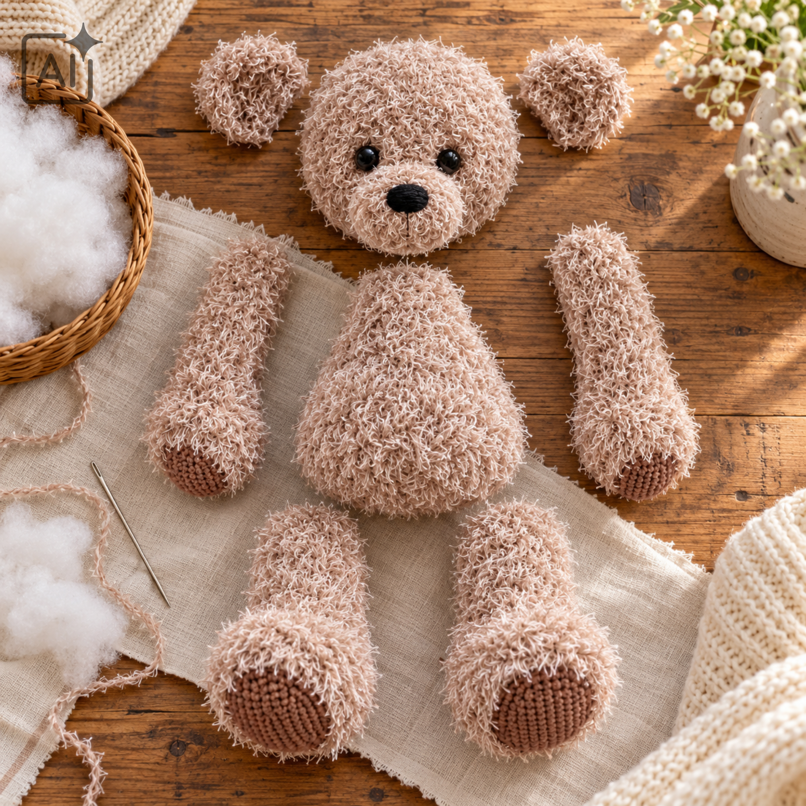
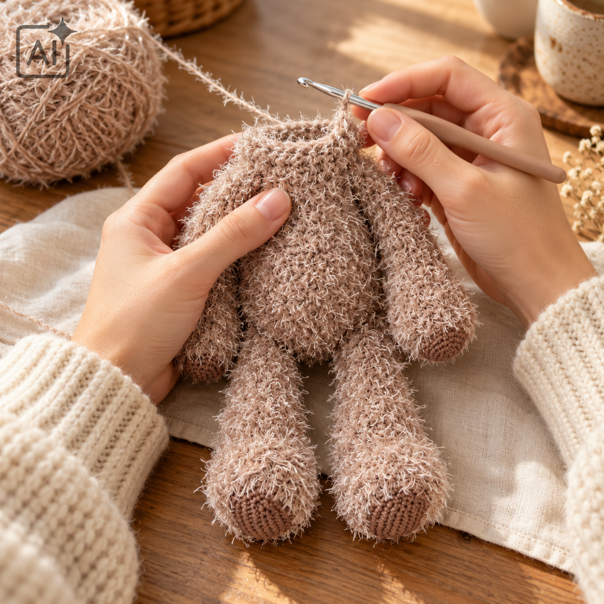
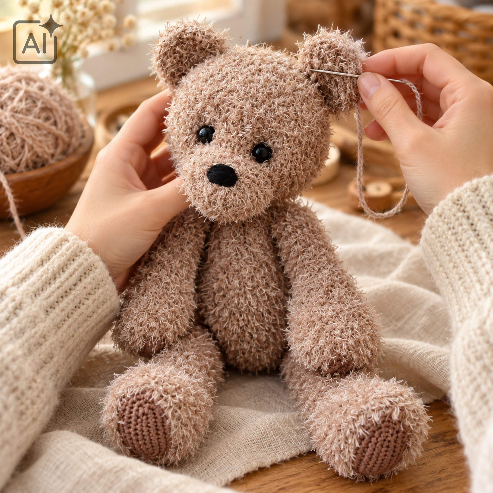

Afkortingen
- st = steek; n = naald
- mr = magische ring
- l = losse; kl = keerlosse
- hv = halve vaste; v = vaste; stk = stokje
- meerd = twee vasten in dezelfde steek
- mind = twee vasten samenhaken
-
M1 = til de horizontale draad op en brei deze gedraaid via de
achterkant
- (…) × 6 = herhaal zes keer; [24] = eindtotaal van de toer
Voordat je begint
Haak de beer in spiraal, tenzij anders aangegeven. Eindig de laatste
toer van ieder onderdeel met een halve vaste en laat ongeveer 20 cm
draad over om mee te naaien.
De nieuwe beelden zijn sfeerillustraties. De aantallen en instructies
hieronder volgen het aangeleverde patroon; dit is niet proefgehaakt.

Teddy: lijf — Couture
- Toer 1: 8 v in een mr [8]
- Toer 2: 8 meerd [16]
- Toer 3: (1 v, meerd) × 8 [24]
- Toer 4: (2 v, meerd) × 8 [32]
- Toer 5: (3 v, meerd) × 8 [40]
- Toer 6: (4 v, meerd) × 8 [48]
- Toer 7: (5 v, meerd) × 8 [56]
- Toer 8: (6 v, meerd) × 8 [64]
- Toer 9–12: 64 v [64]
- Toer 13: (6 v, mind) × 8 [56]
- Toer 14–15: 56 v [56]
- Toer 16: (5 v, mind) × 8 [48]
- Toer 17: 48 v [48]
- Toer 18: (4 v, mind) × 8 [40]
- Toer 19–22: 40 v [40]
- Toer 23: (3 v, mind) × 8 [32]
- Toer 24–26: 32 v [32]
- Toer 27: (2 v, mind) × 8 [24]
- Toer 28–32: 24 v [24]
Vul het lijf stevig op. Eindig met een hv en laat draad over.
Hoofd — Couture
- Toer 1: 6 v in een mr [6]
- Toer 2: 6 meerd [12]
- Toer 3: (1 v, meerd) × 6 [18]
- Toer 4: (2 v, meerd) × 6 [24]
- Toer 5: (3 v, meerd) × 6 [30]
- Toer 6: (4 v, meerd) × 6 [36]
- Toer 7: (5 v, meerd) × 6 [42]
- Toer 8: (6 v, meerd) × 6 [48]
- Toer 9: (7 v, meerd) × 6 [54]
- Toer 10: (8 v, meerd) × 6 [60]
- Toer 11: (9 v, meerd) × 6 [66]
- Toer 12–18: 66 v [66]
- Toer 19: (9 v, mind) × 6 [60]
- Toer 20: (8 v, mind) × 6 [54]
- Toer 21: (7 v, mind) × 6 [48]
- Toer 22: (6 v, mind) × 6 [42]
- Toer 23: (5 v, mind) × 6 [36]
- Toer 24: (4 v, mind) × 6 [30]
- Toer 25: (3 v, mind) × 6 [24]
- Toer 26: 24 v [24]
Plaats de ogen tussen toer 13 en 14 met 6 vasten ertussen. Bevestig de
sluitingen zolang de binnenkant bereikbaar is. Vul het hoofd stevig.
Eindig met een hv, laat draad over en naai het hoofd op het lijf.
De ogen vormen
Met ongeveer 25 cm Couture kun je de ogen iets verdiepen. Steek de
naald vanaf de onderkant van de kin naar de zijkant van een oog. Maak
daar enkele steekjes en ga terug naar de kin. Trek de draad aan om het
oog wat naar binnen te laten vallen. Zet de draad vast en werk hem
weg. Herhaal bij het andere oog, eventueel nogmaals voor beide ogen.
Snuit — Couture
- Toer 1: 6 v in een mr [6]
- Toer 2: 6 meerd [12]
- Toer 3: (1 v, meerd) × 6 [18]
- Toer 4: (2 v, meerd) × 6 [24]
- Toer 5: (3 v, meerd) × 6 [30]
- Toer 6–9: 30 v [30]
Vul de snuit stevig. Naai hem tussen toer 16 en 24 op het hoofd.
Borduur de neus met zwart garen.
Oren: maak er twee — Couture
- Toer 1: 6 v in een mr, 1 kl, keer [6]
- Toer 2: 6 meerd, 1 kl, keer [12]
- Toer 3: (1 v, meerd) × 6, 1 kl, keer [18]
- Toer 4: (2 v, meerd) × 6 [24]
Laat voldoende draad over. Naai de oren ongeveer midden op het hoofd
tussen toer 4 en 14.
Armen: maak er twee
- Begin met Soft, dubbele draad.
- Toer 1: 6 v in een mr [6]
- Toer 2: 6 meerd [12]
- Toer 3: (1 v, meerd) × 6 [18]
- Toer 4: (2 v, meerd) × 6 [24]
- Toer 5: (3 v, meerd) × 6 [30]
- Wissel naar Couture.
- Toer 6: (4 v, meerd) × 6 [36]
- Toer 7–8: 36 v [36]
- Toer 9: (4 v, mind) × 6 [30]
- Toer 10–11: 30 v [30]
- Toer 12: (3 v, mind) × 6 [24]
- Toer 13: 24 v [24]
- Toer 14: (2 v, mind) × 6 [18]
- Toer 15–30: 18 v [18]
- Toer 31: (1 v, mind) × 6 [12]
- Toer 32: 6 mind [6]
Vul de armen niet te stevig. Eindig met een hv en laat draad over.
Naai ze aan het lijf.
Benen: maak er twee
- Begin met Soft, dubbele draad.
-
Toer 1: 8 l. Haak 2 v in de tweede losse vanaf de naald, 5 v, 5 v in
de laatste losse. Werk langs de andere kant: 5 v, 2 v in de laatste
losse [19]
- Toer 2: meerd, 7 v, 3 meerd, 7 v, meerd [24]
- Toer 3: 2 meerd, 8 v, 5 meerd, 8 v, meerd [32]
- Toer 4: 3 meerd, 11 v, 5 meerd, 12 v, meerd [41]
- Wissel naar Couture.
- Toer 5–6: 41 v [41]
- Toer 7: 41 v, alleen in de achterste lus [41]
- Toer 8: 18 v, 4 mind, 15 v [37]
- Toer 9: 2 mind, 13 v, 3 mind, 14 v [32]
- Toer 10: 14 v, mind, 1 v, mind, 13 v [30]
- Toer 11: mind, 10 v, 3 mind, 10 v, mind [25]
- Toer 12: 9 v, mind, 3 v, mind, 9 v [23]
- Toer 13–17: 23 v [23]
- Toer 18: 6 v, mind, 4 v, mind, 5 v, mind, 2 v [20]
- Toer 19–23: 20 v [20]
- Toer 24: 7 v, mind, 7 v, mind, 2 v [18]
- Toer 25–27: 18 v [18]
- Toer 28: 3 v, mind, 8 v, mind, 3 v [16]
- Toer 29: (1 v, mind) × 5, 1 v [11]
- Toer 30: 5 mind, 1 v [6]
Vul de benen, eindig met een hv en laat draad over. Naai ze aan het
lijf. In de bron is toer 7 kort omschreven als “1 v, haak in de
achterste lus (41)”; hier uitgewerkt als één vaste in elke achterste
lus.
Teddy afwerken
Controleer of hoofd, snuit, oren, armen en benen stevig vastzitten.
Werk de losse draden weg. De plaatsing van de onderdelen bepaalt
Teddy’s uitstraling.

Babydekentje met kap: breien
Dit deel wordt gebreid, niet gehaakt. Brei heen en weer in
ribbelsteek. Gebruik 450 g Cosy en breinaalden van 3,5 mm. Controleer
de stekenverhouding: 21 steken ribbelsteek = 10 cm.
Deken
- Zet 145 steken op.
- Brei in ribbelsteek tot ongeveer 70 cm hoogte.
- Kant af.
Kap
- Zet 3 steken op.
-
Meerder iedere naald aan beide zijden met M1 tot je 71 steken hebt.
- Brei nog 8 naalden in ribbelsteek.
- Kant af.
De deken afwerken
Haak de kap op een hoek van de deken vast met haaknaald 3,0 mm. Haak
een picotrand rondom de hele deken en hecht af. Eindformaat: ongeveer
70 × 70 cm.
Veel maakplezier!
Je kunt Teddy en de deken als set of afzonderlijk maken.

Terug naar Teddy
 Terug naar Teddy
Terug naar Teddy